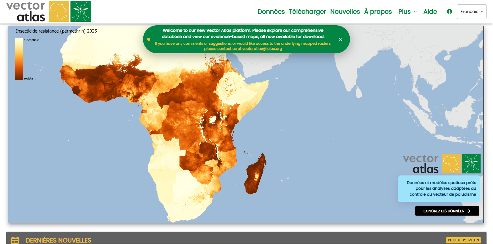
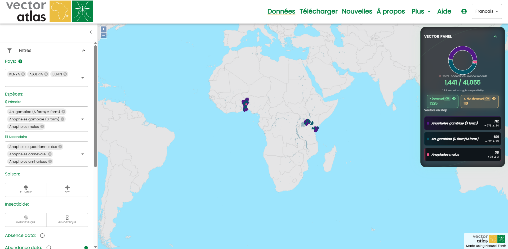
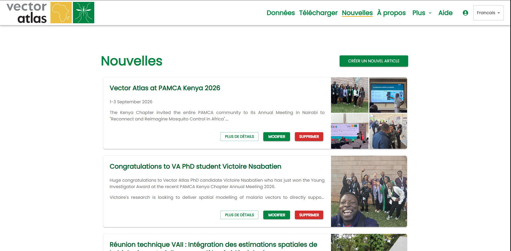

Guide de démarrage rapide
Les sections à gauche fournissent une description plus détaillée des différents parcours possibles dans le système, mais ce guide offre un aperçu rapide pour comprendre ce que le Vector Atlas peut faire et comment vous pouvez explorer les données.
La page Accueil est le point d’entrée initial pour les utilisateurs et présente l’objectif du Vector Atlas : fournir des données prêtes à l’analyse et des modèles spatiaux adaptés à la lutte contre les vecteurs du paludisme. Vous pouvez accéder à la carte en cliquant sur le bouton Explore the data, lire les dernières actualités de l’équipe, ou en apprendre davantage sur le projet et l’équipe grâce au bouton Find out more.

Cliquez sur Explore the data pour accéder à la page de la carte. Celle-ci affiche toutes les données publiées présentes dans le système.
Cliquez sur l’icône de filtre dans les outils de la carte, dans le menu de gauche.

Cela ouvre les filtres où vous pouvez choisir des pays et/ou des espèces pour filtrer les données. Filtrez par Uganda et l’espèce An. funestus pour voir comment les données affichées sur la carte sont réduites. Vous pouvez également zoomer et dézoomer sur la carte, soit avec la molette de la souris, soit avec les boutons en haut à gauche de la carte, soit en pinçant l’écran sur un appareil tactile.

Vous pouvez ensuite affiner davantage grâce à l’outil de sélection par zone. Activez ce mode en cliquant sur le bouton situé sous le filtre « Sélectionner par zone », cliquez sur les points de votre polygone puis cliquez à nouveau sur le premier point pour fermer le polygone. Cliquez de nouveau sur le bouton de mode pour le désactiver.

Développez la section des superpositions et cochez la case d’une superposition pour l’activer.

Faites défiler jusqu’à la dernière section des outils de la carte et développez la section Download. Cliquez sur Download map image pour obtenir une copie de votre carte, utilisable dans un rapport. Le résultat ressemblera à l’image ci-dessous.

Voilà le processus de base pour explorer, consulter et télécharger des données. Vous pouvez suivre les dernières actualités du projet via le lien Actualités dans la barre de navigation supérieure, ou en savoir plus sur le projet sur la page À propos.
